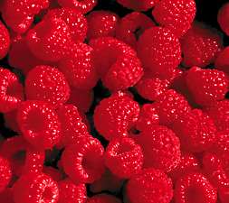
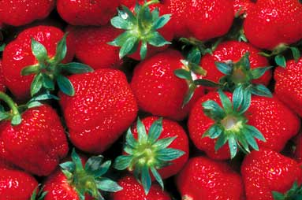

Want a great-tasting way to protect yourself against cancer, strokes, heart and vascular disease, plus the effects of aging? Eat more berries!
Blueberries, strawberries, blackberries, raspberries and mulberries are positively bursting with vitamins, fiber and compounds like flavonoids, which act as antioxidants.
Blueberries are compact sources of ellagic acid, a particularly powerful antioxidant. In a study by Tufts University, blueberries were shown to help reverse defects in memory, cognition and motor function associated with aging.
The antioxidant quercetin, which is stored in the skins of dark berries, protects against cancers and works best when combined with vitamin C - and berries just happen to be one of the most concentrated sources of vitamin C. Rutin, a flavonoid found in berries, also has shown protective effects against ulcers.
Mulberries are rich in resveratrol, another compound that has cancer-preventing abilities. And like other berries, mulberries have plenty of anthocyanins. Not only is this class of natural compounds protective against cancer and cardiovascular disease, it has even shown antiviral and antibacterial properties. In fact, berries are one of the best sources of anthocyanins, which give fruits and vegetables their red, blue and purple colors. Usually, the darker the berry, the higher the concentration of anthocyanins.
Perhaps the best thing about berries is that they're a satisfying sweet, healthy snack that taste good, and are good for you, too.
|
 DAVID CAVAGNARO |
 DAVID CAVAGNARO |
|